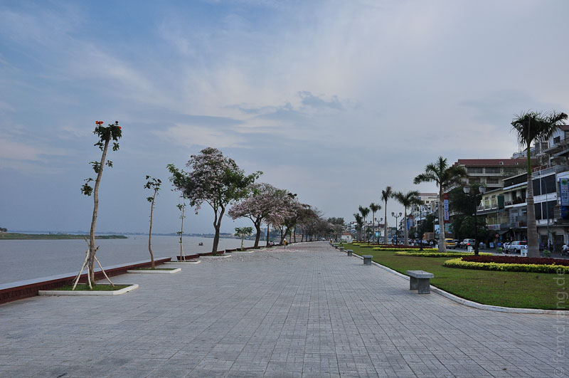
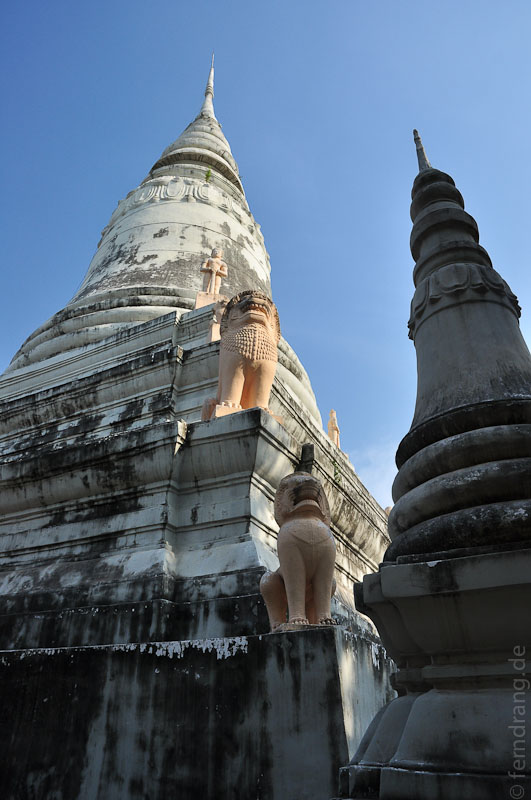
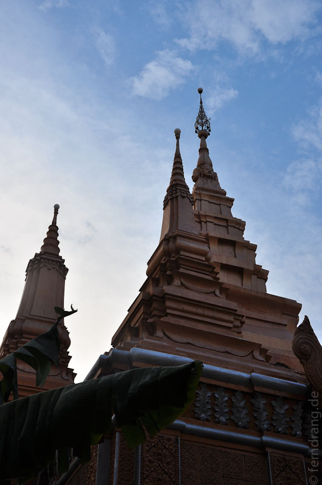

Ursprünglich wollten wir uns in Kambodscha nur Angkor Wat ansehen, aber um etwas mehr vom Land zu sehen, haben wir uns entschlossen über Land zu reisen. Die Busreise nach Phnom Penh war ziemlich eintönig. Das Bild von einfachen Hütten in unbestellten Feldern mit vereinzelten Palmen, die sich im Dunst verlieren setzt sich nicht nur bis zum Horizont sondern vermutlich bis zur Landesgrenze fort. Viel zu oft sieht man Warnschilder vor Landminen. Sein Feld zu pflügen kann lebensgefährlich sein.
Nach sechs Stunden Einöde wirkt Phnom Penh geradezu weltstädtisch. Die Stadt hat allerdings nicht allzu viel Sehenswertes zu bieten. Die Touristen konzentrieren sich auf die Silberpagode, die entäuschenderweise nicht silbern ist (es geht um den Fußboden) und auf die überlaufene Ufermeile.   
Wir sind trotzdem den ganzen Tag durch die Straßen gelaufen und fanden es eigentlich gar nicht schlecht, dem asiatisch wirren Stadtleben zuzusehen. In einigen Straßen reiht sich ein hübsches Restaurant ans nächste. Hier konnten wir endlich "Amok" essen, das kambodschanische Lieblingsgericht aus Fisch und Kokosmilch - ein Grund wieder zu kommen!